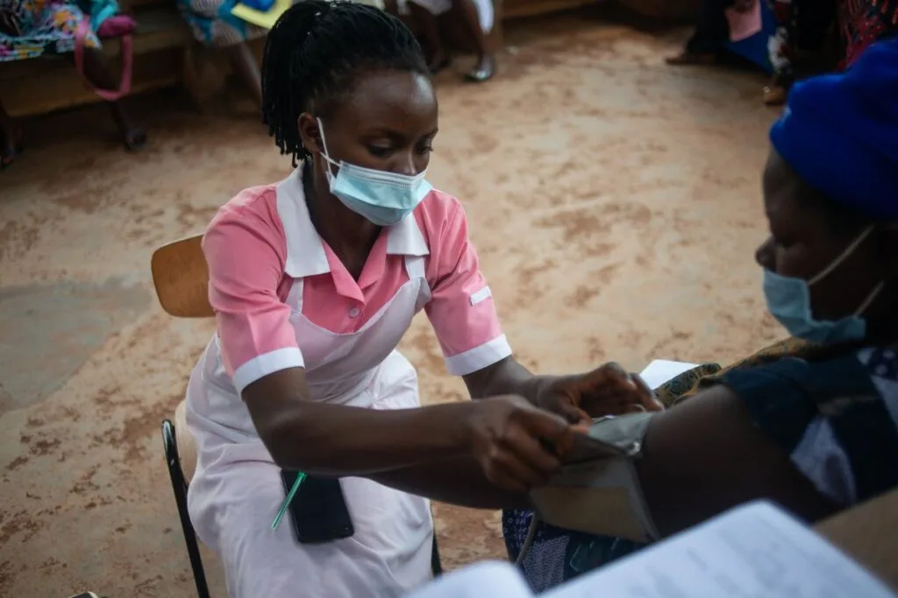

Expanded Nursing Uganda Explanation
Concepts of Primary Health Care should be reviewed through safe maternal and newborn assessment, early recognition of danger signs, respectful communication and timely referral. Connect the definition to vital signs, bleeding, fetal or newborn wellbeing, patient education and local protocol requirements.
01 Concepts of Primary Health Care – PHC
- Essential Health Care: This is the care that meets the local needs of majority that enable individual to live a socially and economically productive life.
- Practically, scientifically sound methods and technology : The health care system should be able to solve the health problems in that community.
- Accessibility Health Care: The services to promote health in the community should be easily reachable by individual / community.
- Full community participation and involvement : The community should acquire responsibility for their own health and welfare in the community (in other words, the community members should not be left out) in any activities. When people are involved in organizing, planning, prioritizing, implementing, monitoring and evaluation, these services then will be socially acceptable and sustainable.
- Affordability of Health care : The cost of health care and its maintenance should be cheap and easily met by the community and country.
- Self-Reliance: The community should be independent, confident and trusting itself by doing from passive recipients to active partners with government/ Non –government and donors thus the community, government should be able to maintain (sustain) PHC activities without external interference.
- Self-determination: The community should be able to decide on its own and take action on matter concerning their own health and development.
- Integration : All sectors work together towards social economic development of the community with health as a nucleus in order to promote the health status of the people and refer where necessary.
02 INTRODUCTION TO PRIMARY HEALTH CARE
Historical Background of PHC
- In 1976 , Haldan T Mahlar of Denmark (who was by then the WHO Director General) proposed the goal of “health for all by the year 2000”. This was during the World health Organization assembly.
- The international conference on primary health care took place at Alma-Ata was the capital of the soviet republic of Kazakhstan located in the Asiatic region of the Soviet Union ( Russia ). The conference was attended by 300 delegates from 134 governments and 67 international organizations from all over the world.
- The 3rd world health assembly that took place in Geneva in 1979 endorsed the conference as declaration i.e. the declaration of Alma-Ata (WHO 1978). This declaration highlighted a minimum set of activities considered essential if there were to be implemented. These set of activities were later the components of PHC.
- Primary health care was endorsed by all countries attending a world conference in Alma-Ata, USSR (Russia) as an approach to reach the goal of HFA/2000 (WHO, UNICEF 1978).
Definition According to World Health Organization WHO :
WHO defines PHC as essential health care based on practical, scientifically sound and socially acceptable methods and technology made universally accessible to individual and families in the community through their full participation and at the cost that the community and country can afford to maintain at every stage of their development in the spirit of self-reliance and self-determination.
Primary Health Care is different in each community depending upon:
- Needs of the residents;
- Availability of health care providers;
- The communities geographic location;
- Proximity to other health care services in the area.
- The “first” level of contact between the individual and the health system.
- Essential health care (PHC) is provided.
- A majority of prevailing health problems can be satisfactorily managed.
- They are closest to the people.
- Provided by the primary health centers.
- This is the care provided by nurses, clinical officers, and village health teams.
- These include(Uganda) Health centers up to HC3, Private clinics, Community church based medical centers.
- More complex problems are dealt with.
- Comprises curative services
- Provided by the district hospitals
- The 1st referral level
- At this level, physicians and health care team carry out assessment and also treat health problems, and at this level, minor surgeries can be carried out.
- These include Health Centre 4’s, KCCA Hospitals and district based hospitals.
- Offers super-specialist care
- Provided by regional/central level institution.
- Provide training programs
- At this level, is where specialists are responsible for giving care and where major surgeries are performed.
- These include Regional Referral Hospitals, All regional and national hospitals acting as Teaching and Training Hospitals, National Referral Hospitals, Specialist medical centers.
03 Concepts of Primary Health Care – PHC
- Essential Health Care: This is the care that meets the local needs of majority that enable individual to live a socially and economically productive life.
- Practically, scientifically sound methods and technology : The health care system should be able to solve the health problems in that community.
- Accessibility Health Care: The services to promote health in the community should be easily reachable by individual / community.
- Full community participation and involvement : The community should acquire responsibility for their own health and welfare in the community (in other words, the community members should not be left out) in any activities. When people are involved in organizing, planning, prioritizing, implementing, monitoring and evaluation, these services then will be socially acceptable and sustainable.
- Affordability of Health care : The cost of health care and its maintenance should be cheap and easily met by the community and country.
- Self-Reliance: The community should be independent, confident and trusting itself by doing from passive recipients to active partners with government/ Non –government and donors thus the community, government should be able to maintain (sustain) PHC activities without external interference.
- Self-determination: The community should be able to decide on its own and take action on matter concerning their own health and development.
- Integration : All sectors work together towards social economic development of the community with health as a nucleus in order to promote the health status of the people and refer where necessary.
04 Principles of Primary Health Care
There are 6 basic principles identified in the primary health care approach.
- Equitable distribution.
- Man power development
- Community participation.
- Appropriate technology.
- Multi-Sectoral approach.
- Self-reliance.
1. Equitable distribution: This means that health services must be shared equally by all people irrespective of their social, economic, cultural and religious differences. All the people- the rich or poor, the urban or rural must have access to health services. So this principle is to address the imbalance currently in health care by distributing the health care budget to rural areas other than concentrating the budget only in cities. 2. Manpower development: Primary health care aims at mobilizing the human potential of the entire country by making use of available resources. This ensures that there is availability of adequate number of appropriate health personnel required to devise and implement plan and action. The strategies required would be re-orientation of the existing health workers development of new categories of workers in health, motivation and training of all manpower to serve the community. 3. Community participation: This is a process by which individuals, families and communities assume responsibility in promoting their own health and welfare. To promote the development of the community and community’s self-reliance, residents themselves need to participate in decisions about their health in the community. Community members and health workers/providers need to work together in partnership to seek solutions to the complex problems facing communities today. 4. Appropriate technology : Is technology that is sound scientifically, flexible and adaptable to the community’s local needs, acceptable to those who use it and to it is used to (served), and it can be maintained by the community people themselves in keeping with the principle of self-reliance, using the resources the community has and can afford. Refers to health care that is relevant to people’s health needs and concerns as well as being acceptable to them. It includes issues of costs and affordability of services within the context of existing resources i.e. the number and type of health professionals’ equipment, and their pattern of distribution throughout the community. Appropriate technology means a technology which requires low capital investment, conserves natural resources, is managed by its users and is in harmony with the environment. 5. Multisectoral approach: Health and family welfare programs cannot stand on their own in an isolated manner. It is recognized that the health of a community cannot be improved within just the health sector; other sectors are equally important in promoting the community’s health and self-reliance, These sectors include, agriculture, animal husbandry, education, housing, public works, communication, water, environment, rural development, cooperatives, industries etc. These sectors need to work together in a multi-sectoral partnership to coordinate their goals, plans and activities to ensure that they contribute to the health of the community and to avoid conflicting or duplicity efforts. 6. Self-reliance: this principle self-reliance applies at the three client level of individual family and community. PHC practitioners play a major role in helping people achieve self-reliance in relation to their health care through community participation and involvement. This means the individuals, families and or communities are encouraged to change the attitude of being passive recipients to active partners with or without government or donor support.
05 Pillars of Primary Health Care
- Community participation ; this is very important for PHC programs to be socially acceptable and sustainable. Community participation is a process whereby the individuals and families assume responsibility for their own health and that of their community. The community can participate by providing resources e.g. finances and raw material like bricks, sand, stones etc.
- Intersectoral/multi-sectoral partnership: there is no sector which works in isolation but the activity one sector has influence on the other e.g. agriculture, water and sanitation, finance etc.
- Equity – all the people irrespective of color, tribe, race, nationality in every country should have access to essential health care.
- Appropriate Technology: This is the technology which is scientifically sound, adaptable to local needs, culturally acceptable and financially feasible
- Political and social support; political leaders must be committed in policy formation, resource mobilization and allocation and mobilization of the community to support PHC programs. Positive Effects of political will : > Policy making > Monitoring and evaluation of PHC activities. > Ensure adequate budgetary allocation > Mobilization that is made from up (top) to bottom > Ensuring priority plans at different levels to reflect PHC characteristics, elements and pillars > Active involvement and participation > Setting aside a day for observing PHC e.g. PHC Day. Negative Effects of political will: > Embezzlement of funds > Civil wars > Self centeredness > Delay of service delivery due to top – bottom approach. > Conflict ideas. > Need to get high salaries by the political leaders
06 Elements or Components of PHC
- Education concerning prevailing health problems including the methods of preventing or controlling them. (Health education). This was a broad component and each country was supposed to make strategies for its implementation. For example in Uganda; STI/HIV/AIDS, Malaria, Tuberculosis and epidemics have a priority in the health education department – MOB.
- Promotion of safe food supply and proper nutrition : this involves the process of improving food production, processing, storage, marketing, preparation and consumption with the ultimate goal of improving the nutritional status as well as economy of the community. Education is necessary especially on cultural beliefs and practices on nutrition for proper nutrition.
- Provision of adequate safe water supply and proper sanitation. > The quality of water sources and their availability in the communities. > Sanitation involves control of those factors in total human environment that has a bearing to the health e.g. housing for proper sanitation, more emphasis is put on; > Latrine coverage. > Refuse disposal, > Sewage management
- Provision of maternal child health and family planning : These are health services rendered to mothers and children through ante-natal, maternity, post natal, family planning clinic; with the aim of improving the life of the mother and child. Most of the donor funding in form of conditional grants is targeted to this component so that the services are subsidized in terms of costs.
- Provision of immunization against major infectious diseases : This gets a lion’s share on the donor funding than other components. WHO/UNICEF & CDC have been spearheading immunization worldwide. In Uganda 8 diseases are immunized i.e. poliomyelitis, tuberculosis, measles, diphtheria, whooping cough (pertussis), tetanus, hemophilic influenza type B and hepatitis B under EPI. Other vaccines like pneumococcal and Rotavirus are proposed to be included in EPI. The Human Papilloma Virus (HPV) against Cervical Cancer is also being introduced.
- Prevention and control of locally endemic diseases: Special programs have been established to eradicate these endemic diseases e.g. > Malaria- malaria control program. > Leprosy and Tuberculosis- TB/Leprosy control program. > Onchocerciasis. > Schistosomiasis. > Guinea worm.
- Appropriate treatment of common diseases and minor injuries : this involves; Establishing of primary health centers i.e. HC II, III and IV with qualified health professionals. Establishment of home based care through community health workers(CHW) who should be trained to treat and for refer to the next level of service delivery.
- Provision of essential drugs : The aim is to supply the community with the most needed drugs that meet the community’s needs. This also depends on the level of the health facilities or health service delivery. NB: These 8 elements of PHC were the first and original under the declaration of Alma-Ata conference.
In case of Uganda, more components have been added These include;
9. Dental health and oral care > Oral hygiene education. > Prevention of oral and dental diseases. > Treatment of dental diseases. 10. Mental health (community mental health) : This is directed to care and rehabilitate the mentally sick in their community and prevention of mental illness. 11. Rehabilitative health services (physically and mentally handicapped ): Those services are provided by the community based rehabilitation programs to help PLW/PLWDs to live an independent life, earning and feel important and acceptable to the community. 12. STI/HIV/AIDS prevention and care . Efforts are geared to prevention and control of STI/HIV infection and treatment and care of the sick. 13. Eye care (primary comprehensive eye care) > To prevent eye related problems in the community through health education. > Treatment and referral of patients with eye related problems in the community.
07 Nursing Uganda Clinical Lens
Use Concepts of Primary Health Care as a practical nursing topic, not only a memorized definition. Move from individual illness to prevention, population risk, health education and continuity of care.
- What to understand first: define concepts of primary health care, identify the normal or expected pattern, then explain what changes when the patient is unwell.
- Why it matters in care: the nurse must recognize risk early, explain findings clearly, document accurately and know when to escalate.
- How to revise it: connect each point to assessment, nursing diagnosis or care problem, intervention, rationale and evaluation.
08 Assessment Guide
- Who is affected, where they live, risk factors, resources and barriers to care.
- Environmental hygiene, nutrition, immunization, water, sanitation and health-seeking behaviour.
- Community beliefs, leaders, household practices and surveillance data.
09 Nursing Priorities, Rationales and Outcomes
- Promote prevention, early detection, referral and community participation.
- Use clear health education matched to literacy, culture and available resources.
- Document findings and coordinate with community health structures.
The rationale for these priorities is patient safety: nursing actions should prevent deterioration, reduce discomfort, support recovery and create clear evidence for the next caregiver.
- Expected outcome: The community understands the message, risk is reduced and follow-up or referral pathways are active.
10 Patient Teaching and Revision Check
- Explain concepts of primary health care in simple language the patient or caregiver can repeat back.
- Teach warning signs, medicine or follow-up instructions, hygiene or lifestyle points where relevant.
- For exams, prepare a short answer using: definition, causes or risk factors, signs, assessment, management, complications and prevention.
- For ward practice, document baseline findings, actions taken, patient response and the plan for review.
Illustrations and Diagrams (30)



22 more diagrams available, open the lesson for full illustrations.
Related Video Lectures
Watch nursing lecture videos on YouTube for this topic. Opens in a new tab.
Watch on YouTubeExternal link: YouTube may use its own cookies and terms. Nursing Uganda is not affiliated with YouTube.